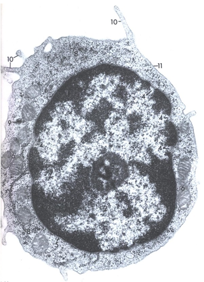
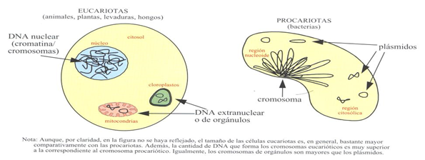
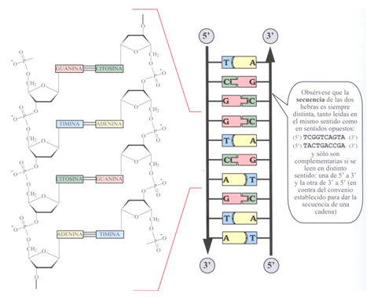

1. OBTENCIÓN DE DNA DE TEJIDOS VEGETALES Y ANIMALES.
OBTENCIÓN DE DNA DE TEJIDOS VEGETALES Y ANIMALES.
OBTENCIÓN DE DNA DE TEJIDOS VEGETALES Y ANIMALES.
ADN es la abreviatura de ácido desoxirribonucleico. Constituye el principal componente del material genético la inmensa mayoría de los organismos, junto con el ARN (ácido ribonucleico). Es el componente químico primario de los cromosomas y el material en el que los genes están codificados. En las bacterias el ADN se encuentra en el citoplasma, mientras que en organismos más complejos, tales como plantas, animales y otros organismos multicelulares, la mayor parte del SADN reside en el núcleo celular, aunque hay una pequeña proporción en la mitocondria y en los cloroplastos.

La presencia del ADN en las células se conoce desde hace más de cien años. EL ADN fue identificado inicialmente en 1868 por Friederich Meischer, biólogo suizo, en los núcleos de las células de pus obtenidas de los vendajes quirúrgicos desechados y en el esperma de salmón. El llamó a la sustancia nucleína, aunque no fue reconocida hasta 1943, gracias al experimento realizado por Oswald Avery.

Los componentes del ADN son nucleótidos; cada nucleótido está formado por un grupo fosfato, una desoxirribosa y una base nitrogenada. El ADN lo forman cuatro tipos de nucleótidos, diferenciados por sus bases nitrogenadas divididas en dos grupos: dos purínicas (o puricas) denominadas adenina (A) y guanina (G), y dos pirimidínicas (o pirimidicas) denominadas citosina (C) y timina (T).
La estructura del ADN es una pareja de largas cadenas de nucleótidos. La estructura de doble hélice del ADN fue descubierta en 1953 por James Watson y Francis Crick. Una larga hebra de ácido nucleico está enrollada de otra hebra formando un par entrelazado. El rasgo fundamental es que cada base nitrogenada de una hebra se coloca frente a una base de la otra, de tal forma que la adenina siempre se enfrenta a la timina (lo que se denomina A-T) y la guanina siempre a la citosina (G-C). La adenina se une a la timina mediante dos puentes de hidrógeno, mientras que la guanina y la citosina lo hacen mediante tres puentes de hidrógeno; de ahí que una cadena de ADN que posea un mayor número de parejas C-G sea más estable.

La función principal del ADN es actuar como el almacén de la información genética de las células. Esta información se utiliza para sintetizar las proteínas. En algunos microorganismos, una sola molécula de ADN es suficiente para cumplir esta función, pero en los organismos superiores existen varias moléculas y en los diploides cada una de estas moléculas se encuentran duplicadas. Estas moléculas se llaman cromosomas. Los cromosomas, además de ADN contienen proteínas llamadas histonas, que permiten al ADN condensarse y ocupar un volumen muy pequeño.
Por ejemplo, en el hombre hay 23 pares de cromosomas en cada célula (por lo que se llaman diploides). Las células germinales (óvulos y espermatozoides) son una excepción, pues contienen un solo ejemplar de cada cromosoma (y se llaman células haploides).
El ADN codifica las instrucciones esenciales para fabricar un ser vivo idéntico a aquel que provienen (o muy similar, en el caso de los organismos que se reproducen sexualmente, donde los cromosomas del padre y de la madre se combinan).
La planta de chícharo contiene 7 pares de cromosomas. En este sencillo experimento los aislaremos.
Qué el alumno aislé el DNA de tejidos vegetales y animales.
Obra publicada con Licencia Creative Commons Reconocimiento Compartir igual 4.0